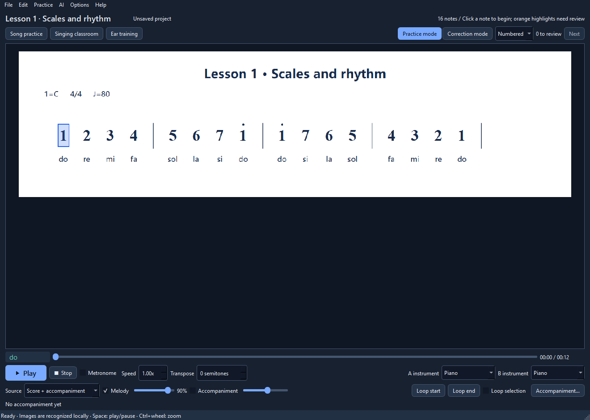

A desktop app for singing practice
Play the score.Practise the song.
Open a score, correct any misread notes, slow down a tricky phrase, and sing along.
Open source · MIT · Windows 10 / 11

Start with a score
Get the notes right, then practise.
Open a score
Open a numbered-notation or staff-notation image, or a MusicXML file. Try a built-in exercise if you don't have a score handy.
Check the notes
Compare the result with the original image and fix any mistakes. Complex rhythms and multiple voices still need a careful check.
Practise at your pace
Change the tempo or key, loop a phrase, and save your corrections in a JPP project.
Practice tools
Tools for practising from a score.
Change the tempo or key in synthesized playback without making a new recording.
- Playback controls
- Change the tempo or key, loop a phrase, use the metronome, and choose piano or one of 128 General MIDI instruments.
- Edit the score
- Compare notes with the original image, correct mistakes, and work across multiple pages.
- Singing practice
- Practise with lyrics and microphone feedback. Start with built-in scale and rhythm lessons, or open your own score.
- Save and export
- Save JPP projects, recover autosaved work, and export practice audio as WAV.
For Windows 10 / 11
Download SingLilt.
Choose the Windows x64 installer or portable ZIP from GitHub Releases.
Build on Windows
Visual Studio 2026 with Desktop C++ tools, CMake 3.30+, PowerShell 7 and Python 3.12+.
Extract the source, open PowerShell in that folder, and run:
pwsh -NoProfile -File scripts/setup.ps1Read the build guideA few practical details.
What is included in the core package?
The desktop app, piano sound bank and native staff-recognition tools. Vocal separation and lyric transcription are optional local components, not part of the core package.
Can I add another interface language?
Yes. Add a translated language directory next to the executable and restart. Language packs are external files, so the app does not need rebuilding.
Language pack formatCan I work on the code?
Yes. The application is C++20 with Qt 6 and is licensed under MIT. Build instructions, the project format and contribution notes are in the repository. Third-party resources retain their own licenses.
Contributing